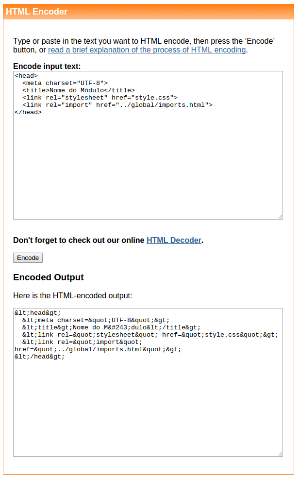

Módulo
<!DOCTYPE html>
<html lang="pt-BR">
<head>
<meta charset="UTF-8">
<title>Nome do Módulo</title>
<link rel="stylesheet" href="style.css">
<link rel="import" href="../global/imports.html">
</head>
<body>
<header id="header">
<h1>Nome do Módulo v0.1</h1>
<nav>
<h1>Índice</h1>
<li><a href="#modulo">Módulo</a></li>
<li><a href="#descricao">Descrição</a></li>
<li><a href="#uso">Uso</a></li>
<li><a href="#comportamento">Comportamento</a></li>
<li><a href="#log">Log das versões</a></li>
</nav>
</header>
<main class="global main">
<section id="modulo">
<h1>Módulo</h1>
<!-- Marcação HTML do módulo -->
</section>
<section id="descricao">
<h1>Descrição</h1>
<p>Descrição do módulo.</p>
</section>
<section id="uso">
<h1>Uso</h1>
<p>Instruções para o uso do módulo, com exemplo de uso do código:</p>
<pre>
<code class="code html">
<head>
<link rel="stylesheet" href="caminho/para/WebModules.css">
</head>
</code>
</pre>
...
Descrição
Uma elemento de bloco para a visualização de amostras de código, com marcação do número de linhas e realce de cor para o código inspirado no esquema de cores Sublime Monokai. O realce de cor supora as linguagens html, css, javascript, scss, http, makefile, markdown, sql, xml, json, bash e php.
Uso
Crie um elemento <pre> com wm-caixaDeCodigo como valor de class. Dentro desse elemento crie um elemento <code> com code [linguagem] como valor de class, onde [linguagem] é o nome da linguagem do código, em letras minúsculas, como no exemplo:
<pre class="wm-caixaDeCodigo">
<code class="code html">
<head>
<link rel="stylesheet" href="caminho/para/WebModules.css">
</head>
</code>
</pre>
Se a caixa de código está inserida num documento HTML e seu código utiliza caracteres especiais utilizados pela linguagem HTML como < ou ", será necessário escapar os caracteres especiais desse código, como no exemplo acima. Recomendamos a ferramenta de enconde do site opinionatedgeek.com.

Comportamento
O módulo Caixa de Código ocupa 100% da largura do elemento onde está inserido. Caso o código ultrapasse a largura do elemento, uma barra de rolagem horizontal aparece na base do elemento, permitindo a navegação do código sem alterar a largura do elemento. A altura do elemento de adapta ao código.
Log de versões
-
1.0 - 16/07/2015
- Criado o módulo.